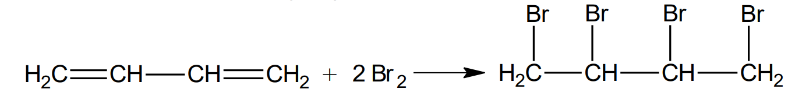

Definiție: Compușii halogenați sunt compuși organici cu funcțiune simplă care conțin în moleculă unul sau mai mulți atomi de halogen.
Compușii halogenați se mai numesc și derivați halogenați și au formula generală R – X , unde X = F, Cl, Br, I, iar R este un radical de hidrocarbură. Deci compușii halogenați provin din hidrocarburi prin înlocuirea a unul sau mai mulți atomi de hidrogen cu atomi de halogen.
La stabilirea nomenclaturii, halogenii nu au prioritate în fața radicalilor sau altor grupări. Redăm mai jos ordinea de stabilire a priorității pentru principalele grupe funcționale.
Clasificare:
După natura atomului de halogen din moleculă pot fi:
Fluorurați: CF4 = tetrafluorura de carbon , CH2F2 = difluorometan
După natura radicalului de hidrocarbură de care se leagă atomul sau atomii de halogen din moleculă
Compuși halogenați alifatici saturați sau nesaturați:
Saturați: clorometan, clorura de etil, iodura de izopropil, etc.
o Nesaturați: CH2 = CH – CH2 – Br bromura de alil
Compuși halogenați aromatici: C6H5–Cl = clorobenzen (clorură de fenil) sau C6H5 – CH2 – Cl clorofenilmetan (clorură de benzil)
După poziția pe catenă a atomilor de halogen:
vicinali – atomii de halogen sunt legați de atomi de carbon vecini
geminali – atomii de halogen sunt legați de același atom de carbon
izolați – atomii de halogen sunt legați de atomi de carbon ce nu sunt vecini
După reactivitatea halogenului:
cu reactivitate normală: bromura de etil (derivați ai alcanilor, cicloalcanilor sau arenelor cu halogenul în catena laterală);
cu reactivitate scăzută: clorobenzen sau clorura de vinil: CH2 = CH – Cl (au halogenul legat direct de un nucleu aromatic sau de atomul de carbon implicat într-o legătură dublă);
cu reactivitate mărită - când halogenul este în poziția alilică, benzilică sau la un atom de carbon terțiar, de ex.:
Metode de obținere
Compușii halogenați se pot obține cel mai rapid prin halogenare directă (reacții de halogenare) prin reacții de substituție și reacții de adiție.
Halogenarea alcanilor
Halogenarea alcanilor se face prin reacții de substituție.
Condițiile de reacție : clorurarea sau bromurarea alcanilor se face la lumină difuză (fotochimic) sau prin încălzire (t = 300 – 50000 C). Nu se pot obține direct (prin halogenare directă) derivați fluorurați și iodurați, ci prin metode indirecte.
Clorurarea și bromurarea fotochimică a metanului conduce la obținerea unui amestec de compuși clorurați sau bromurați:
În funcție de condițiile de reacție, se pot obține și derivați monohalogenați.
De exemplu:
prin monoclorurarea fotochimică a etanului se obține cloroetan (kelen);
prin monoclorurarea fotochimică a propanului se obțin 1-cloropropan și 2-cloropropan (clorura de izopropil), care sunt izomeri de poziție.
prin monobromurarea butanului se obțin cei doi izomeri: 1-bromobutan și 2-bromobutan (în concentrație mai mare).
Deoarece stabilitatea radicalilor crește în ordinea:
Cel mai ușor de substituit este atomul de hidrogen de la atomul de carbon terțiar, apoi de la atomul de carbon secundar și cel mai greu de la atomul de carbon primar.
Prin halogenarea unui alcan care conține atomi de carbon primari, secundari și terțiari, se va obține un amestec de izomeri, care va conține în cantitatea cea mai mare, derivații cu halogenul legat de atomul de carbon terțiar.
Halogenarea alchenelor
Halogenarea alchenelor se poate face prin reacții de adiție și prin reacții de substituție.
prin adiția halogenilor sau hidracizilor la alchene se obțin derivați halogenați
Adiția halogenilor
Halogenii care se pot adiționa la alchene sunt: Cl2, Br2 și I2 , iar reactivitatea lor în reacțiile de adiție crește cu caracterul electronegativ al acestora.
Reacția de halogenare a alchenelor se face de obicei într-un solvent inert (CCl3 , CH2Cl2 , CS2). Dacă adiția iodului se face mai greu, cea a clorului și a bromului au loc instantaneu. De aceea reacția cu bromul se folosește pentru recunoașterea / identificarea alchenelor (se observă decolorarea soluției de Br2).
Prin adiția halogenilor la alchene se obțin derivați dihalogenați vicinali (saturați) cu aspect uleios. De aici denumirea de olefine dată alchenelor.
Adiția hidracizilor
Reactivitatea hidracizilor în reacția de adiție la alchene crește cu tăria acidului, deci în ordinea: HCl < HBr < HI.
La adiția hidracizilor la alchenele nesimetrice se respectă regula lui Markovnikov : la adiția hidracizilor la alchene, hidrogenul se adiționează la atomul de carbon mai bogat în hidrogen de la legătura dublă:
obținerea derivaților halogenați din alchene prin reacția de substituție
Substituția halogenilor (clor sau brom) la alchene, are loc la temperatură ridicată (500 0C sau 300 0C cu catalizator de Al2O3), iar halogenul intră în poziția alilică (substituie un atom de H din poziția alilică).
Halogenarea alchinelor
Halogenarea alchinelor se poate face prin reacții de adiție a halogenilor și hidracizilor.
Adiția halogenilor
Reacția clorului cu acetilena în fază gazoasă este violentă (cu explozie) și exotermă: C2H2 + Cl2 → 2C + 2HCl + Q
Adiția halogenilor la alchine se face într-un solvent inert (CCl4 ). În funcție de cantitatea de reactant sau condițiile de reacție se obțin produși dihalogenați sau tetrahalogenați:
Adiția hidracizilor
Adiția hidracizilor , HX (X = Cl sau Br) are loc la temperaturi cuprinse între 170-2000C, în prezența clorurii de mercur, HgCl2 drept catalizator. Se respectă regula lui Markovnikov la adiția hidracizilor la alchine.
Halogenarea alcadienelor
Halogenarea alcadienelor se poate face prin reacții de adiție a halogenilor și hidracizilor.
Prin halogenarea (Cl2, Br2) alcadienelor cu legături conjugate, produsul majoritar este cel obținut prin „adiția 1-4”. Minoritar se obține și produsul rezultat prin „adiția 1-2” sau 3-4. Cifrele 1, 2, 3 și 4 sunt „împrumutate” de la butadienă, dar pot fi și diferite.
Cu exces de brom se obține produsul tetrabromurat saturat:

Halogenarea arenelor
Halogenarea arenelor se poate face atât prin reacții de adiție cât și prin reacții de substituție, în funcție de condiții.
Halogenarea arenelor prin reacții de adiție
Halogenarea (Cl2 , Br2) arenelor se face la lumină (fotochimic):
Halogenarea fotochimică a naftalinei are loc numai la unul din nuclee. Clorul ocupă întâi pozițiile α (mai reactive), iar apoi și pozițiile β.
Halogenarea arenelor prin reacții de substituție
Halogenarea benzenului prin reacții de substituție se face în prezența unui catalizator:
cu clor - catalizatori FeCl3 sau AlCl3:
cu brom - catalizator FeBr3:
- cu iod - catalizator HNO3:
Clorurarea naftalinei conduce la obținerea unui derivat tetrahalogenat:
Substituenții de ordinul I orientează intrarea celui de-al doilea substituent în pozițiile orto și para față de primul substituent, (cu activarea nucleului).
Substituienții de ordinul II orientează intrarea celui de-al doilea substituent în poziția meta față de primul substituent, (cu dezactivarea nucleului).
Halogenarea la catena laterală
Clorurarea toluenului la lumină, are loc la catena laterală (nu la nucleu) și se formează un amestec de derivați clorurați:
Halogenarea (Cl2 , Br2) arenelor în poziția benzilică (la catena laterală), are loc asemănător cu halogenarea alchenelor în poziția alilică:
Obținerea compușilor halogenați din alcooli și compuși carbonilici.
Reacția alcoolilor cu hidracizii (HCl, HBr, HI)
Se mai numește și reacția Lucas. Alcoolii reacționează cu o soluție concentrată de hidracid și ZnCl2 (reactiv Lucas). Cel mai ușor reacționează alcoolii terțiari.
Reacția alcoolilor primari și secundari cu PBr3 (tribromură de fosfor) sau SOCl2 (clorură de tionil).
Reacția compușilor carbonilici cu PCl5 (pentaclorură de fosfor).
Proprietăți fizice
Compușii halogenați, la temperatură obișnuită sunt în toate stările de agregare:
gaze : clorometanul bromometanul, cloroetanul , clorura de vinil, etc.;
lichide : clorobenzenul, bromobenzenul, cloroformul, tetraclorura de carbon, etc;
solide : teflonul (politetrafluoroetena), DDT (dicloro-difenil-tricloretan), etc.
Clorurile și bromurile inferioare au miros dulceag și proprietăți anestezice.
Derivații halogenați au molecule polare sau nepolare. Cei inferiori cu moleculă polară sunt solubili în apă, iar compușii monofluorurați formează legăruri de H cu apa. Cei superiori (peste 3 atomi de carbon în moleculă) îi compușii polihalogenați sunt insolubili în apă, dar solubili în eteri, alcooli, esteri.
Punctele de fierbere și densitatea cresc de la derivații fluorurați la cei iodurați, iar densitatea compușilor bromurați, iodurați și polihalogenați e mai mare decât a apei (ρ = 1 g/cm3 ).
Proprietăți chimice
Proprietățile chimice ale derivaților halogenați sunt date de natura halogenului (halogenilor) și de natura radicalului de care este/sunt legat/legați.
Principalele proprietăți ale compușilor halogenați sunt reacțiile de substituție și reacțiile de eliminare.
Reacții de substituție
Reactivitatea derivaților halogenați, depinde de natura atomului (atomilor) de halogen din moleculă și de natura radicalului de care este legat. Ușurința cu care compușii halogenați vor da reacții de substituție crește cu:
tipul de radical de care se leagă halogenul (cei terțiari sunt mai reactivi);
natura halogenului:
reactivitatea derivatului halogenat:
Se consideră că derivații halogenați cu reactivitate scăzută (cum ar fi cei aromatici sau vinilici) dau reacții de substituție în condiții foarte energice și cu randamente mici.
Reacția de hidroliză
Condițiile de lucru depind de reactivitatea derivatului halogenat. În continuare vom considera că avem un derivat halogenat cu reactivitate normală, iar pentru acesta, condițiile sunt: la cald, în soluții apoase de baze tari.
compușii monohalogenați formează prin hidroliză alcooli:
compușii dihalogenați geminali formează prin hidroliză compuși carbonilici
compușii trihalogenați geminali formează prin hidroliză compuși carboxilici:
Reacția cu amoniacul și aminele
Reacția de alchilare a arenelor(reacția Friedel-Crafts)
Definiție: Substituția unui atom de hidrogen de la un nucleu aromatic cu un radical alchil se numește reacție de alchilare Friedel-Crafts.
Prin reacțiile de alchilare a arenelor se obțin arene cu catenă laterală.
Alchilarea arenelor se poate face cu: derivați halogenați, alchene sau alcooli.
alchilarea arenelor cu derivați halogenați, se face în prezență de AlCl3 anhidră:
alchilarea arenelor cu alchene, se face în prezență de AlCl3 umedă:
Ecuațiile reacțiilor chimice sunt:
alchilarea arenelor cu alcooli se face în prezență de H2SO4:
Reacția de eliminare(de dehidrohalogenare)
Condiții: soluții alcoolice (alcooli inferiori) de baze tari (KOH, NaOH, C2H5ONa). Se consideră că derivații halogenați cu reactivitate scăzută nu dau această reacție. Reactivitatea derivaților halogenați în această reacție crește în ordinea:
În această reacție de eliminare, produsul majoritar se obține conform regulii lui Zaițev (atunci când e cazul): Regula lui Zaițev: Hidrogenul pleacă de la un atom de carbon vecin atomului de carbon de care se leagă halogenul, mai sărac în hidrogen.
Prin această metodă se pot obține alchene, alchine sau alcadiene.
Prin dehidrohalogenarea compușilor halogenați care conțin doi atomi de halogen legați de același atom de carbon (derivați dihalogenați geminali) se pot obține alchine:
Există derivați halogenați care la dehidrohalogenare nu respectă regula lui Zaițev, dacă formează compuși cu legături duble conjugate:
Reacția cu magneziu
Toți derivații halogenați pot reacționa cu magneziu și formează compuși organo-magnezieni (compuși Grignard).
Condiții: eter anhidru (solvent).
Prin hidroliză, compușii organo-magnezieni formează hidrocarburi.
Reacția cu cianurile metalelor alcaline (sinteze de nitrili)
Reacția este importantă deoarece crește numărul atomilor de carbon din catenă.
Reacția cu acetiluri alcaline
Reacția este importantă deoarece crește numărul atomilor de carbon din catenă.
Utilizări și importanță
Derivații halogenați se utilizează la obținerea, maselor plastice, insecticidelor, ierbicidelor, cauciucurilor sintetice, etc. Sunt intermediari în multe sinteze organice.
Clorura de metil – agent frigorific, solvent, anestezic local.
Triclorometan – solvent, anestezic.
Tetraclorura de carbon – stingerea incendiilor, solvent.
Clorura de etil – agent frigorific, anestezic (kelen).
Clorura de benzil – substanță lacrimogenă și intermediar în sinteze organice.
Freonii – cloro-fluoro derivați ai alcanilor (cu 1-2 atomi de carbon), folosiți ca agenți de răcire, distrug stratul de ozon (O3) al planetei și sunt foarte stabili.
Fluorul este un element foarte periculos pentru oganismul uman. În zilele noastre, industria compușilor cu fluor ne afectează pretutindeni. El este prezent în medicamente (anestetice, hipnotice, pilule dietetice, unele medicamente antipsihotice cum ar fi Prozac și Cipro, analgezice, corticoizi, etc.), în materialele plastice, în insecticide, pesticide, substanțe pentru deratizare, erbicide și fungicide, tutun, produsele de aluminiu, oțel, teflon, cărămidă, ceramică, ș.a.
Alte exemple de substanțe periculoase sunt: DDT-ul și dioxinele (denumirea pentru un grup de câteva sute de substanțe cu structură și proprietăți asemănătoare ; doza mortală 10-6g / kg corp ). Dioxinele provin din arderea reziduurilor care conțin compuși organoclorurați, ca de exemplu masele plastice și lemnul tratat, cât și din procesul de fabricație al hârtiei. Sunt contaminate în principal produsele lactate, cele din carne și unele uleiuri dietetice din pește. Acumularea se realizează în țesuturile grase ale organismului. Dioxinele sunt cancerigene, determină perturbări ale sistemului endocrin și alterează sistemul imun. Ele întârzie dezvoltarea cerebrală și reduc coeficientul de inteligență la copii.